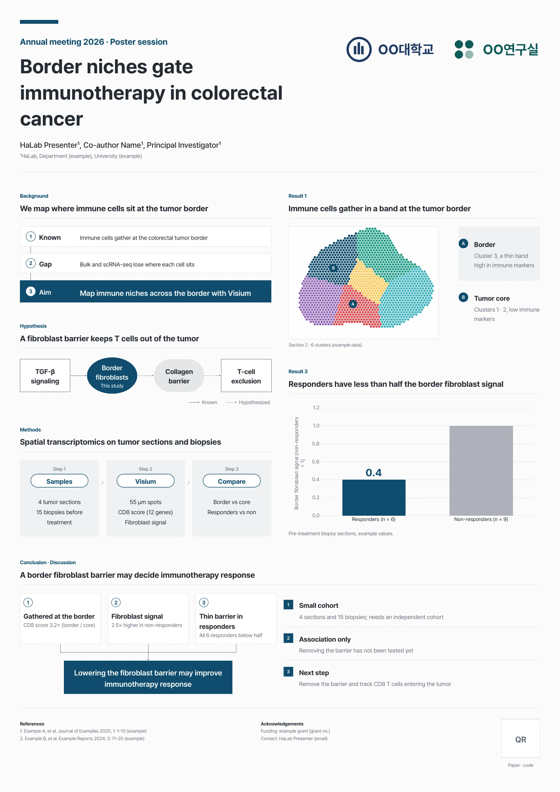
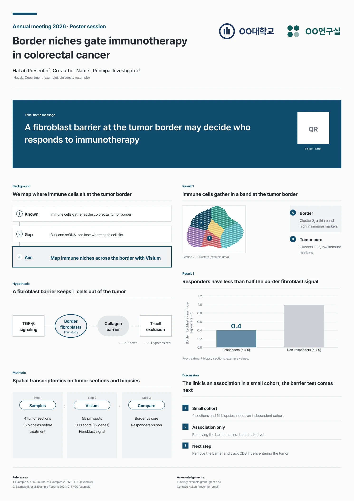
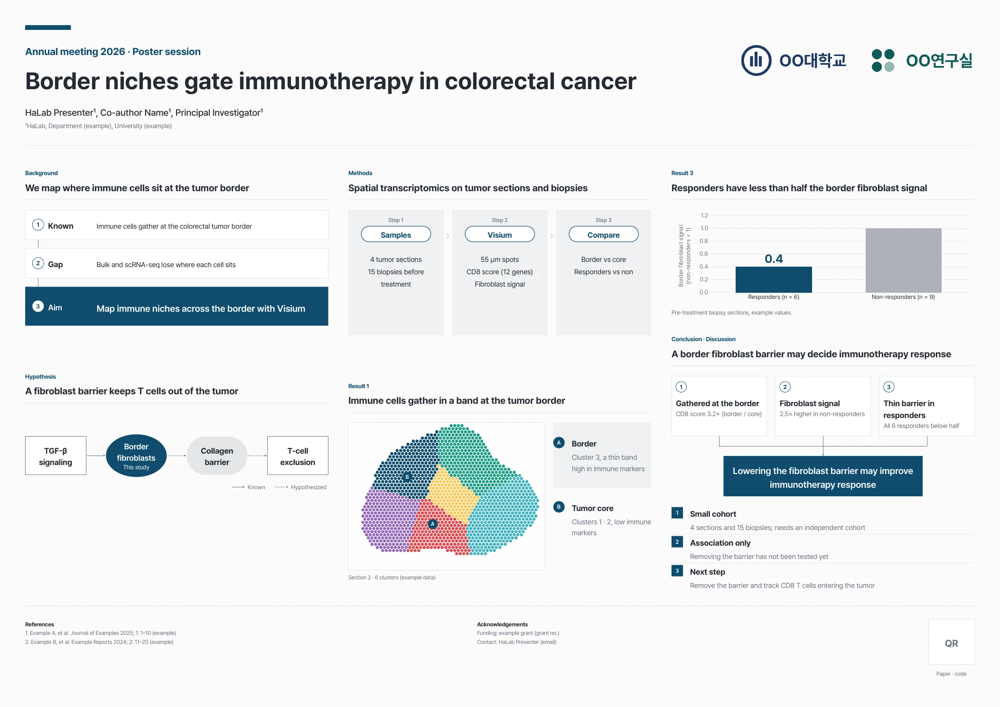
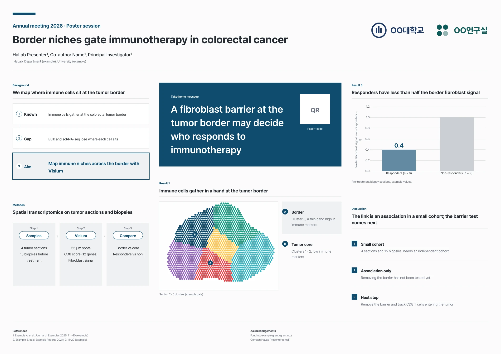

홈 › 자리별 덱 › 학회 포스터
학회 포스터
지나가는 사람에게 몇 초 안에 결과를 보여 주고, 관심 있는 사람과 이야기해요
A0 90×120cm 세로 가로
이런 자리
포스터 세션에서는 사람들이 지나가며 봐요. 몇 초 안에 메시지를 잡게 하고, 관심을 보인 사람과는 포스터 앞에서 이야기해요.
- 흐름: 제목 · 저자 → 배경 → 가설 → 방법 → 결과 → 결론 · 고찰 → 참고문헌 · QR
- 기둥형은 칸을 순서대로 읽게, 핵심 메시지형은 결론 한 문장을 먼저 크게 보여 줘요.
- 칸 안은 슬라이드 패턴 그대로예요. 칸 제목도 슬라이드 제목처럼 결론 문장으로 써요.
팁
- 학회 안내에서 크기와 방향(세로 · 가로, A0 · 90×120cm 등)을 먼저 확인해요.
- 2m 떨어져서도 제목과 메시지가 읽혀야 해요. 서식은 본문 24pt 안팎, 칸 제목 32pt 안팎, 포스터 제목 70pt 이상이에요.
- 글은 줄이고 그림을 크게. 결과는 2–3개면 충분해요.
- 고찰은 짧게: 한계와 다음 실험만.
- 핵심 메시지형은 진한 색을 메시지 띠 한 곳에만 써요. 칸 안 강조는 옅은 면으로.
- QR 자리는 논문 · 코드 · 연락처로 가는 QR 그림으로 바꿔요.
- 인쇄 전에 100%로 확대해 그림이 깨지지 않는지 봐요.
- 포스터 앞에서 할 1–2분 설명을 준비해요.
포스터 흐름
제목 · 저자 → 배경 → 가설 → 방법 → 결과 → 결론 · 고찰 → 참고문헌 · QR
시안
같은 내용으로 만든 시안 4개예요. pptx는 크기 두 가지로 받을 수 있고, 위에서 고른 색을 따라가요 (그라데이션 · 리치는 포스터에 쓰지 않아요). 칸 안은 슬라이드 패턴 그대로라 패턴 쪽 시안을 붙여 넣어 바꿔도 돼요.

세로 A · 기둥형
왼쪽 기둥 → 오른쪽 기둥 순서로 위에서 아래로 읽어요. 결론 · 고찰은 아래 전체 폭에 둬요.

세로 B · 핵심 메시지형
결론 한 문장을 맨 위에 크게 둬요. 지나가며 보는 사람도 메시지는 가져가요. 진한 색은 메시지 띠 한 곳만 써요.

가로 A · 기둥형
기둥 3개를 왼쪽부터 읽어요: 배경 · 가설 → 방법 · 결과 → 결과 · 결론 · 고찰.

가로 B · 핵심 메시지형
가운데에 메시지와 대표 그림, 양옆에 배경 · 방법과 결과 · 고찰을 둬요. 진한 색은 메시지 띠 한 곳만 써요.